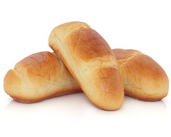

Glosario
Glosario
- A
terminos_con_Aa
- B
terminos_con_Bb
- C
terminos_con_Cc
- D
terminos_con_Dd
- E
terminos_con_Ee
- F
terminos_con_Ff
- G
terminos_con_Gg
- H
terminos_con_Hh
- I
terminos_con_Ii
- J
terminos_con_Jj
- K
terminos_con_Kk
- L
terminos_con_Ll
- M
terminos_con_Mm
- N
terminos_con_Nn
- Ñ
terminos_con_Ññ
- O
terminos_con_Oo
- P
terminos_con_Pp
- Q
terminos_con_Qq
- R
terminos_con_Rr
- S
terminos_con_Ss
- T
terminos_con_Tt
- U
terminos_con_Uu
- V
terminos_con_Vv
- W
terminos_con_Ww
- X
terminos_con_Xx
- Y
terminos_con_Yy
- Z
terminos_con_Zz
A
- Amante:[persona] Que siente una intensa atracción emocional y sexual hacia una persona y desea compartir una vida en común con ella.
- Arroz: Planta cereal de hojas largas y ásperas y espiga grande, estrecha y colgante después de la floración; puede alcanzar hasta 1 m de altura.
B
- Brioche: Bollo esponjoso de forma redondeada.

C
- Canoa: Embarcación pequeña y de poco calado, estrecha y alargada, con la proa muy aguda y la popa recta, que navega sin timón y propulsada a remo o a motor.
Búsqueda en Google de la palabra canoa
D
- Dedo: Parte alargada en que terminan la mano y el pie de los vertebrados
E
- Elefante: Mamífero paquidermo de gran tamaño, el mayor de los terrestres, con la piel de color gris oscuro, gruesa, rugosa y sin pelo, grandes orejas colgantes, larga trompa prensil, cuatro extremidades gruesas y casi cilíndricas, cola larga, y dos colmillos muy largos de punta cónica; se alimenta de vegetales, y vive en diversos hábitats de Asia y África.
F
- Fatuo/a: [persona] Que se muestra engreído en su actitud, comportamiento o manera de hablar.
G
- Granjero/a: Persona que posee una granja o trabaja en una granja cuidando de los animales y de los productos del campo.
H
I
- Imperioso: Que es muy necesario y urgente.
J
- Jota: Nombre de la letra j.
K
- Kilo: Unidad de masa del Sistema Internacional, de símbolo kg, que equivale a la masa del prototipo de platino iridiado que se encuentra en la Oficina Internacional de pesas y medidas de París.
L
- Llama: Masa de gas en combustión que sale hacia arriba de los cuerpos que arden y que desprende luz y calor.
M
- Mampostería: Procedimiento de construcción en que se unen las piedras con argamasa sin ningún orden de hiladas o tamaños.
N
Ñ
- Ñu: Antílope de cuerpo, cola y patas semejantes al caballo, pelaje pardo o gris azulado, cabeza grande, cuernos curvos como los del toro, abundante crin negra y una barba bajo la garganta; habita en grandes grupos en la sabana africana.
O
- Ominoso/a: Que es abominable y merece ser condenado y aborrecido.
P
Q
- Queso: Alimento sólido que se obtiene por maduración de la cuajada de la leche una vez eliminado el suero; sus diferentes variedades dependen del origen de la leche empleada, de los métodos de elaboración seguidos y del grado de madurez alcanzado.
R
- Rodillo: Utensilio de cocina para extender o aplanar una masa que consiste en un cilindro de madera u otro material duro con un mango en cada extremo.
- Rodillo: Instrumento para pintar grandes superficies que consiste en un cilindro giratorio de un material que empapa fácilmente la pintura, como tela o esponja, con un mango.
S
- Saltimbanqui: Artista que realiza acrobacias y ejercicios de saltos y equilibrios ante el público, generalmente en espectáculos al aire libre o de carácter popular.
T
- Tramposo/a: [persona] Que hace trampas en el juego o en otra actividad.
U
- Umbrío/a: [lugar] Que está normalmente en sombra.
V
- Vasto: Que es muy extenso o amplio.
W
- Whisky: Bebida alcohólica de alta graduación que se obtiene por destilación de cebada y otros cereales.
X
- Xenofobia: Rechazo a los extranjeros.
Y
- Yermo/a: [lugar] Que está extraordinariamente empobrecido.
Z
- Zarrapastro: Persona andrajosa o desaseada.